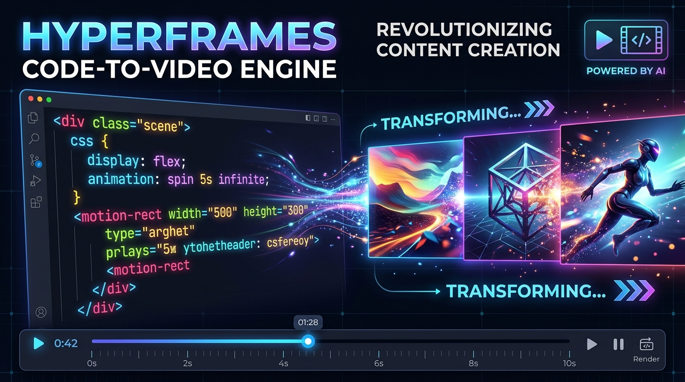
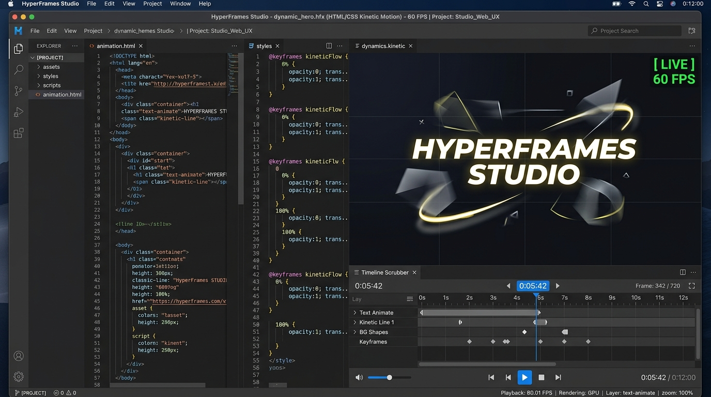

코드로 영상을 굽는 시대: 비디오 제작의 패러다임이 뒤집히다
AI 에이전트가 마크업 코드와 CSS 키프레임만으로 고화질 모션 그래픽을 1프레임 오차 없이 찍어내는 프레임워크. 비디오 제작의 문법을 프로그래밍으로 재정의.
1. 타임라인 편집기의 종말과 '에이전트 네이티브' 비디오의 탄생
기업가치 5억 달러(약 6,800억 원)를 돌파하며 생성형 AI 아바타 시장을 장악한 HeyGen이 자사의 핵심 렌더링 코어인 HyperFrames를 깃허브에 전격 오픈소스로 공개했다. 이들이 던진 선언은 지난 30년간 어도비 프리미어(Premiere), 애프터이펙트(After Effects), 파이널컷(Final Cut)이 확립해 온 '타임라인 마우스 드래그' 중심의 비디오 제작 철학을 뿌리부터 뒤흔든다. "비디오 제작은 이제 타임라인 편집이 아니라, HTML과 CSS를 컴파일하는 프로그래밍 작업이다."
최근 Claude Code나 Cursor 같은 자율 코딩 에이전트들이 소프트웨어 엔지니어링 전반을 잠식하고 있지만, 영상 제작 분야만큼은 에이전트의 손길이 닿지 못하는 성역으로 남아 있었다. 상용 영상 소프트웨어의 바이너리 규격과 복잡한 키프레임 그래프, 그리고 무거운 리액트 기반 비디오 라이브러리들은 AI 에이전트가 다루기에 지나치게 번잡하고 메모리 누수가 잦았기 때문이다.
2. 비동기 웹을 60fps 결정론적 픽셀 파이프로 묶어낸 기술 메커니즘
웹 브라우저는 본질적으로 비동기(Asynchronous) 환경이다. 네트워크 상태에 따라 폰트와 이미지가 뒤늦게 디코딩되고, 브라우저의 requestAnimationFrame은 하드웨어 부하에 따라 가변 주사율로 요동친다.
일반 웹 페이지를 화면 녹화하면 프레임 드롭이 발생하고, 똑같은 코드를 두 번 실행해도 결과 영상의 타임라인이 미세하게 어긋나는 비결정론(Non-determinism) 문제가 발생한다.
HyperFrames는 이 문제를 해결하기 위해 헤드리스 크로미엄(Headless Chromium)의 V8 엔진을 저수준 가상 클럭으로 완전히 장악했다.
애니메이션이 자연 시간의 흐름에 의존하지 않고, t=0.000s, t=0.016s, t=0.033s와 같이 수학적으로 엄밀한 1/60초 단위로 돔(DOM) 상태를 정지시킨 채 픽셀을 캡처한 뒤 다음 프레임으로 진행한다.
캡처된 RGBA 원시 프레임은 GPU 가속 파이프를 통해 FFmpeg 프로세스로 직결되어 한 치의 오차도 없는 방송용 MP4를 출력한다.
<motion-rect> 및 CSS 키프레임, Lottie 애니메이션을 시크 가능한(Seekable) 웹 구조로 신속 코딩.
3. 비디오 SaaS 제국의 해자 붕괴와 오픈소스 크리에이티브 경제
그동안 영상 템플릿 서비스나 소셜 미디어 영상 제작 SaaS 기업들은 서버에서 영상을 한 편 렌더링할 때마다 크레딧을 차감하며 월 수만 원에서 수십만 원의 구독료를 챙겨왔다.
하지만 HyperFrames는 npx skills add heygen-com/hyperframes 단 한 줄로 개발자의 로컬 컴퓨터에서 완전 무료로 무제한 렌더링을 실행할 수 있도록 허용했다.
이는 소프트웨어 엔지니어링에서 벌어졌던 '노코드 도구의 몰락과 코드 기반 에이전트의 부흥'이 영상 제작 분야에서도 동일하게 재현되고 있음을 시사한다. 마우스로 복잡한 UI 요소를 옮기는 작업보다, 에이전트에게 텍스트로 의도를 지시하고 코드로 비디오를 컴파일하는 속도가 압도적으로 빠르기 때문이다.

비디오는 더 이상 거대 방송국이나 전문 그래픽 스튜디오만의 전유물이 아니다. 이제 비디오는 에이전트가 터미널에서 순식간에 작성하고 1초 만에 테스트할 수 있는 '살아있는 코드 조각'으로 전환되었다.